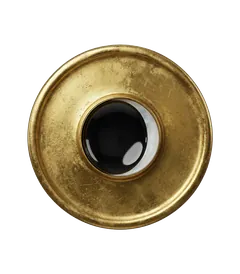
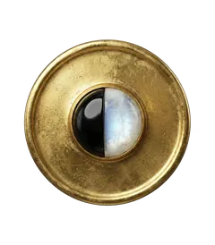
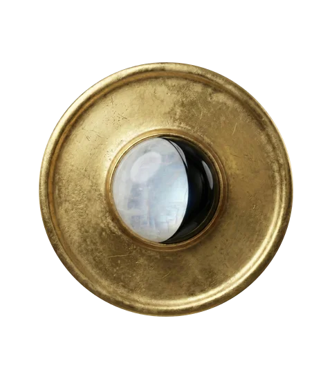
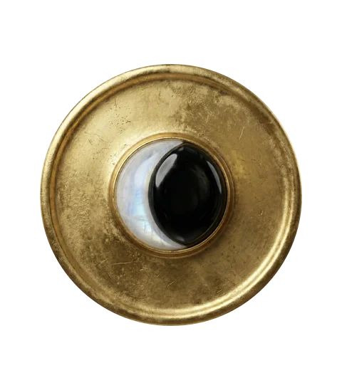
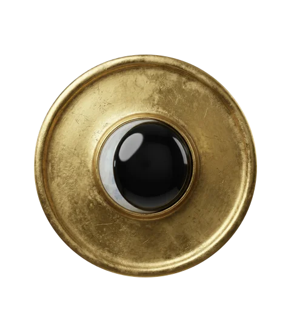
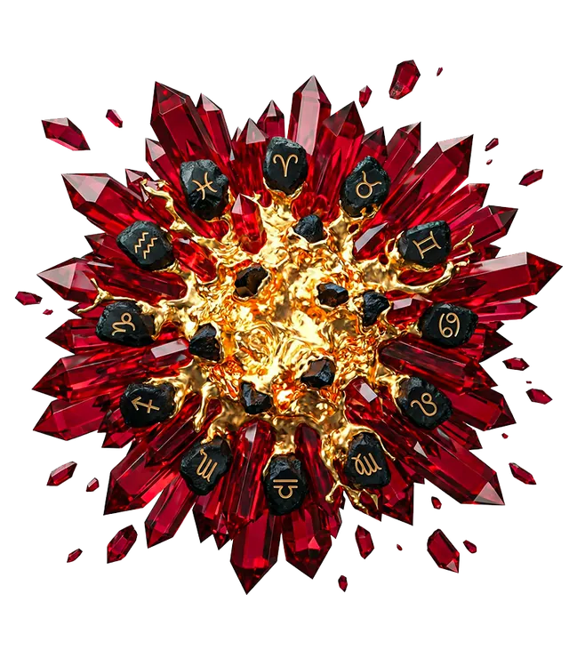
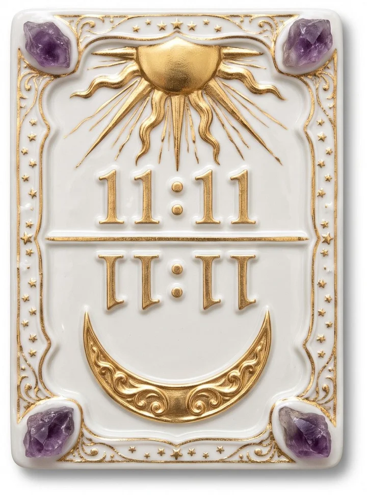
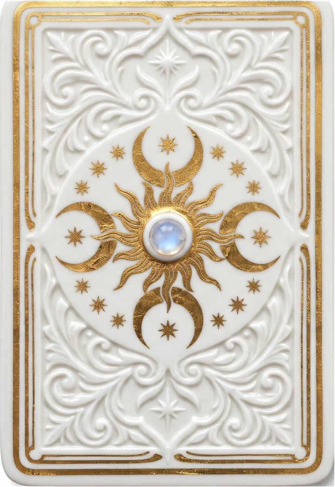

Astrologie · Maison Authentique
L'horoscope du jour, calculé sur le ciel réel.
Chaque nuit, la Maison calcule la position du Soleil, de la Lune et des planètes, puis rédige pour chacun des douze signes une lecture en trois temps : amour, travail, bien-être. Choisissez le vôtre sur le cadran.
Mis à jour le 31 octobre 2026 à 10:23 · 12 signes · lecture gratuite


Le ciel du jour
Où sont les planètes aujourd'hui
Positions calculées pour le samedi 31 octobre 2026. Mercure est rétrograde en ce moment, jusqu'au 13 novembre 2026.
- Soleilen Scorpion 8°
- Luneen Cancer 19°
- Mercureen Scorpion 17°rétrograde
- Vénusen Balance 26°rétrograde
- Marsen Lion 18°
- Jupiteren Lion 24°
- Saturneen Bélier 9°rétrograde
- Uranusen Gémeaux 4°rétrograde
- Neptuneen Bélier 2°rétrograde
- Plutonen Verseau 3°
Le cycle en cours
La Lune, phase après phase
La Lune décroît : un temps pour trier, terminer et lâcher ce qui ne sert plus, avant le prochain départ.
 Nouvelle lune
Nouvelle lune
Premier croissant
Premier quartier
Gibbeuse croissante Pleine lune
Pleine lune
Gibbeuse décroissante- Dernier quartierCe soir

Dernier croissant
Les outils de la Maison
Au-delà du signe solaire
 Gratuit
GratuitThème astral
Votre ciel de naissance calculé au centième de degré : ascendant, planètes, maisons.
 Amour
AmourCompatibilité
Deux signes, cinq lectures : le quotidien, le désir, la durée, ce qui rapproche et ce qui coince.
 L'année qui vient
L'année qui vientHoroscope 2027
Votre année saison par saison, avec les dates clés calculées sur le vrai ciel.
LuneCalendrier lunaire
Pleines et nouvelles lunes à l'heure près, et ce qu'elles remuent pour chaque signe.

L'oracle du chaosRed Flags
Les alliances toxiques du zodiaque, sans filtre et avec humour.
 Chèvre de Feu
Chèvre de FeuHoroscope chinois
Votre signe chinois et votre année 2027, à partir du 6 février.
 Encyclopédie
EncyclopédieLa Bibliothèque
Ascendant, Lilith, maisons, rétrogrades : les notions qui vont plus loin que le signe.

11h11, 22h22…Heures miroirs
La signification des 24 heures miroirs et des nombres angéliques, en amour et au travail.

GratuitTirage du tarot
Oui ou non, passé, présent, futur : les 22 arcanes majeurs, sans inscription.
 Numérologie
NumérologieChemin de vie
Le nombre de votre date de naissance et ce qu'il dit de votre route.

Le Cabinet privé
Votre thème complet, lu par Madeleine.
Une étude écrite à partir de votre date, de votre heure et de votre lieu de naissance. Sa spécialité : l'héritage familial, ce que votre ciel porte de la lignée qui vous précède.
- L'Essentiel karmiqueThème identitaire, héritage familial, mission de vie, une question.20 €
- La Boussole annuelleL'Essentiel, plus la révolution solaire et vos dates clés de l'année.45 €
- L'Alchimie totaleLa Boussole, plus un rituel, une prescription de pierres et une correspondance ouverte.80 €
La Bibliothèque
À lire cette semaine
Questions fréquentes
Ce qu'on nous demande
L'horoscope du jour est-il fiable ?
Un horoscope par signe décrit une tendance commune à des millions de personnes : il ne remplace pas un thème natal. Le nôtre part des positions réelles des planètes, calculées chaque nuit, puis les traduit pour chacun des douze signes.
Comment les positions des planètes sont-elles calculées ?
Chaque nuit, la Maison calcule la position du Soleil, de la Lune et des huit planètes à partir des éphémérides astronomiques, ainsi que les rétrogradations, la phase de la Lune et les aspects du jour. L'horoscope n'a le droit de citer que ces positions.
Quand Mercure sera-t-il rétrograde ?
Mercure est rétrograde en ce moment, jusqu'au 13 novembre 2026. La période dure environ trois semaines et revient trois à quatre fois par an.
Pourquoi connaître son ascendant ?
Le signe solaire décrit votre nature profonde ; l'ascendant, calculé avec l'heure et le lieu exacts de naissance, décrit votre manière d'aborder le monde. Deux personnes du même signe peuvent avoir des ascendants très différents.
Qu'est-ce que l'astrologie karmique ?
Une lecture du thème natal qui cherche les schémas hérités de la lignée et la direction indiquée par le Nœud Nord. C'est la spécialité du Cabinet privé de Madeleine.

« Les étoiles inclinent, mais ne déterminent pas. »
Madeleine, fondatrice de la Maison